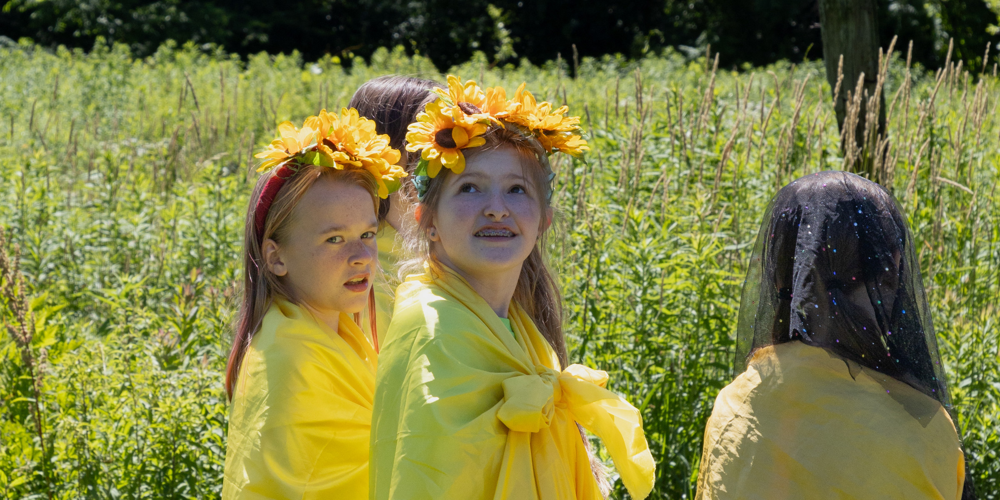

Welcome, New Campers!
Here’s a description of our camp and what we do to help first
year campers feel welcome.
Journey Camp has intangible qualities — there’s a welcoming
spirit, a way that the campers look out for each other, the
listening abilities of the staff, the nurturing, and the
individualized planning that takes in the needs of each camper.
Our leadership program allows for a ratio of one staff for every
two campers.

A Description of Our Camp
Journey Camp is a treasured place for young people who want time to make their own choices, enjoy making new friends where everyone is valued, like the support of teen leaders, and really like playing in the woods.
Parents tell us how glad they are that we specialize in making it safe and comfortable to come to camp without knowing anyone ahead of time. New campers are greeted right away with a tour as they arrive. Parents can stay a half hour as children get settled. Very soon the first morning, the community divides into small groups called “Roots Groups” where children get to know eight others in a welcoming setting before the day gets going. Staff of all ages are trained to look out for new campers and help each person make friends. By the end of the first day, children tell us they are surprised to see how familiar the faces have become. They have made new friends and they feel nested.
We create a relaxed atmosphere where children are attended to, and can express what they need. The staff works hard to get to know each person and think about them. Every day the “Roots Group” continues to meet during snack, and this provides a home base. These welcoming practices have been effective for over three decades to insure that you don’t need to come to camp with a friend you already know.
What Makes Journey Camp Different and Beloved
After holding sessions for over thirty years, we’ve learned how to help young people make new friendships.
We offer kindness, creativity and support. We make agreements so that everyone is treated in a friendly way. Journey Camp is a place where your feelings and needs are acknowledged, honored, and met.
There's lots of freedom of choice.
All day long we help people get nested doing things they enjoy. When we go into the woods, you select whether to build a stick house, a fairy house, or help collaborate on the big global house. If you choose play-building, you create your own character. Workshop times always offer a wide range of choices from crafts to active games to hikes to songwriting and dance.
When we say you can be yourself, we really mean it.
When campers realize they aren’t going to get in trouble for their feelings, they feel safer. People can ask to be included in a game and the answer is always yes. We teach how to advocate for yourself and let people know what you need. Our core values are peace-building and mutual respect.
BIG SUPPORT is available.
A warm group of young teens are there to assist campers as well as college-age and adult staff who’ve been returning year after year. This is a place where all ages respect and enjoy each other.
Campers ages 7 to 11 have layers of help from several tiers of leaders. There are younger teens who are like older sisters, older counselors who know what makes camp work, and college age leaders, as well as adults who span many decades. The staff gives close attention and thinks carefully about what will help each person.
Staff members take the feelings of the campers very seriously and teach them how to believe in themselves and ask for what they need.
We welcome campers who would love a place with such support.
Our Grounding
Journey Camp is intentionally designed for community building by the
founder and director— Sarah Pirtle who is a national pioneer in teaching
about cooperation and communication that is developed through
creativity. She is the author of five books and has nine recordings.

Journey Camp Daily Schedule
The campers tell us that they really appreciate being trusted to make their own decisions. First thing in the day, some arrive sleepy and some want to be active. We give them a chance to land in a small workshop before we gather as a whole group. We believe that offering several choices at each workshop period is important.
Flexible arrival: 8:45-9:15am
Workshop Period One:
• Art Table
• Handcrafts including work with yarn and bracelet making
• Creative Dramatics with story-building
• Music and songwriting
• Active games
• Dance
All camp gathering at 9:45 AM is a time for community building with singing, movement, skits and announcements.
Roots Groups: Small groups meet each day to build friendships among campers of similar ages. This is a time for snack then games.
Woods Time: The whole camp walks up to the woods where there is a choice of stick- housebuilding, arts and crafts, building fairy houses, nature exploration and active games. Campers are able to go back and forth on a given day and follow their interests.
Lunch and free time
Story Circle by the Grandmother Sycamore Tree
Staff put on a continuing story that culminates on Friday when the campers join the story.
Afternoon Workshops:
• Woodland exploration
• Creative movement
• Creative Dramatics
• Arts and crafts
• Guitar
• Snack circle by the Story Tree
• Homemade snack supplied by camp.
• Singing and sharing of news from the day.
End at 4 PM
More Program Details:
We respect a young person’s need for play and fun. We serve children who like to explore and are in touch with their creative spark. We are on a hillside where we do not have swimming. We have active climbing and games. Our camp is not competitive sports oriented. It is a camp for fun, humor, and giving space for kids to develop their own culture of play. We serve young people who feel nourished by nature. We feature daily activities in the woods and emphasize nature awareness. We also offer workshops like basket-making, tracking and bow-drill making.
We serve young people who like to be part of a community. We serve children who are ready to learn to balance individual and group needs, can participate in problem- solving and learn communication skills. This is a camp for children who have already learned self-control and care about learning how to be conscious about their actions to take responsibility for their behavior.
We promote ecology and partnership values:
• We emphasize respect for all dimensions of diversity and actively foster understanding of differences and interrupting of exclusion and bias.
• We teach cooperation and partnership, helping children feel part of the generations of people who want to help create a human society that respects all life and fosters justice and sharing.
Why Outside Play is Important
Let’s go outside. Let’s know in our bones that we aren’t just on the Earth, but we are part of the Earth. Let’s go inside. Let’s connect with each other heart to heart.
As a teacher for thirty-five years and also as a mother, I’ve aimed at creating activities that foster an attitude, an awareness, an appetite for the Earth that once awakened, remains and shapes a human life. Sometimes I call it moving into Green Time because it’s a quality of interaction and connection that can happen seated on a couch as well as walking through the woods. It’s the basis for what we do at Journey Camp.
Standing by a stream or hugging a tree, we feel a rush of joy, a common feeling that people have felt throughout the ages. At Journey Camp for over three decades, we’ve had amazing moments of nature exploration.
Caring interactions open a space of reflection and connection that feed a child. The transformative mood of Green Time can happen in a field, in the woods, being with a tree in the park, or inside your home.
Responding to the Earth has, until very recently, always been an integral and assumed part of a young person’s life. Richard Louv writes in his book Last Child in the Woods: Saving Our Children from Nature-Deficit Disorder—“The young spend less and less of their lives in natural surroundings, their senses narrow, physiologically and psychologically, and this reduces the richness of human experience….As one scientist puts it, we can now assume that just as children need good nutrition and adequate sleep, they may very well need contact with nature.”
At Journey Camp we join the work of parents and teachers to assure and encourage direct time in nature. Electrical media has a pull on our nervous system that happens unwittingly and insidiously. Rather than feed the very recent pull of electricity, we need to feed the ancient pull of trees and sky. Our bodies—our brains and hearts—evolved from the direct source of nature, and we require that contact for our very physical, social, and moral development.
While young brains are forming, they call for the good food of direct encounter with people, plants, grass and streams. The wonder of a flower opening, the fresh smell of rain, the joy of walking in mud—these encounters awaken our basic bonding with the earth.
What we need also includes person to person time. Human interactions are also potent in countering nature deficit disorder. Our caring staff pause with children to foster person-to-person connection.